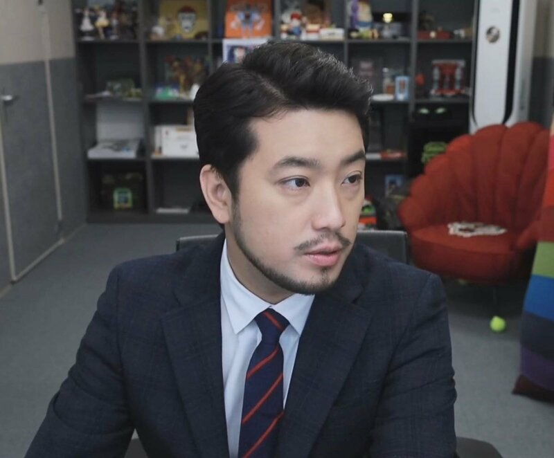

| 이력서 | |||||
|---|---|---|---|---|---|
|  | 이름 | 이병건 | 닉네임 | 침착맨(이말년) | |
| 직업 | 유튜버,방송인 前 웹툰작가 |
생년월일 | 1983.12.05 | ||
| 국적 | 대한민국 | 최종학력 | 건국대학교 시각디자인과 (수석입학) |
||
| 이력 | 웹툰작가 |
이말년씨리즈 : 데뷔작 야후에서 연재 시작하고 네이버로 이적
이말년 서유기 : 코믹물임에도 서유기원전에 가까울 정도로 고증이 잘되어있는게 특징
이 외에도 "이말년 수필", "이말년씨리즈2018" 등의 작품으로 2015년 ~ 2018년까지 웹툰을 연재하다가 |
|||
| 유튜버,방송인 |
2011년 KBS "유희열의 라디오 천국"의 게스트로 첫 출연
다음팟에서 스트리머를 처음 시작했다. 이때부터 침착맨이라는 이름 사용했다. |
||||